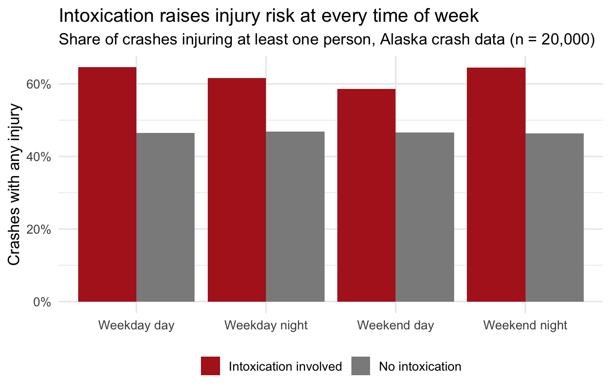

Final Project Exemplar
A complete worked example — what an ‘Excellent’ project looks like
Read me first. This page is a full final project, written to score “Excellent” on every row of the grading rubric — with 📋 rubric notes in the margins explaining why each part earns its points. It uses the course’s Alaska crash dataset, which — like all course datasets — is not eligible for your own project (you select your own data at Session 7). So study the shape, not the content. The complete script is downloadable: final-project-exemplar-script.R.
In a real submission this report would be a 3–5 page .docx with the figures pasted in, plus the .R script and the dataset. Here it’s one web page so you can see everything at once.
Do intoxication-involved crashes injure more people? Evidence from 20,000 Alaska traffic crashes
1 · Introduction
Impaired driving is one of the oldest targets of traffic enforcement, but enforcement resources are finite: patrols concentrate on nights and weekends on the assumption that this is when impaired driving does its damage. This project asks two questions of 20,000 simulated Alaska crash records: (1) are intoxication-involved crashes more likely to injure at least one person, and (2) is that extra risk concentrated at night or on weekends — as the patrol-scheduling assumption implies?
The answer matters practically. If intoxication raises injury risk whenever it occurs, then enforcement rationales built purely around Friday night may miss weekday-afternoon impairment — a pattern DUI court data have long hinted at.
📋 Rubric note (The question, motivated): two sentences in, a reader knows the question, the data, and why anyone should care. No statistics yet — motivation first.
2 · Data and methods
The dataset holds one row per crash (n = 20,000) with the number of people injured, an intoxication flag (intox_any: alcohol or drugs recorded for a driver), a timestamp, and crash characteristics. Three variables are derived for analysis:
Outcome. any_injury is binary (someone was hurt / no one was hurt), so the final model is a logistic regression; both the frequentist fit (glm) and the Bayesian fit (brm, default priors, 2 chains × 2,000 iterations, seed 705) are reported, per the course requirement. driver_age is included as a control.
📋 Rubric note (Quality of analysis): the outcome’s type drives the model choice, and the sentence says so. The derivations are shown, not hidden — a reader can re-create every variable.
3 · Results
Descriptives
# A tibble: 2 × 4
intox_any crashes p_any_injury mean_injuries
<dbl> <int> <dbl> <dbl>
1 0 18455 0.466 0.743
2 1 1545 0.625 1.13 About 8% of crashes involve an intoxicated driver. Injury is common in both groups — roughly 48% of sober-driver crashes injure someone — but intoxication-involved crashes injure someone about 64% of the time, and average more injured people per crash (≈1.1 vs ≈0.7).
The key visualization
crashes |>
mutate(
intox = if_else(intox_any == 1, "Intoxication involved", "No intoxication"),
period = case_when(
night & weekend ~ "Weekend night",
night ~ "Weekday night",
weekend ~ "Weekend day",
.default = "Weekday day"
)
) |>
summarize(p_injury = mean(any_injury), n = n(), .by = c(intox, period)) |>
ggplot(aes(period, p_injury, fill = intox)) +
geom_col(position = "dodge") +
scale_fill_manual(values = c("firebrick", "grey55")) +
scale_y_continuous(labels = scales::percent) +
labs(
title = "Intoxication raises injury risk at every time of week",
subtitle = "Share of crashes injuring at least one person, Alaska crash data (n = 20,000)",
x = NULL, y = "Crashes with any injury", fill = NULL
) +
theme_minimal(base_size = 13) +
theme(legend.position = "bottom")
The gap between the red and grey bars — roughly 15 percentage points — is strikingly flat across the four time windows. Whatever intoxication does to injury risk, it does not appear to save it up for Saturday night.
📋 Rubric note (The key visualization): one figure carries the whole finding, the caption says what the plot shows (not what the author hoped), and the y-axis is honest (percentages, baseline visible).
The final model — both traditions
Frequentist:
# A tibble: 5 × 6
term estimate std.error statistic p.value odds_ratio
<chr> <dbl> <dbl> <dbl> <dbl> <dbl>
1 (Intercept) -0.139 0.044 -3.19 0.001 0.87
2 intox_any 0.649 0.055 11.9 0 1.91
3 nightTRUE 0.008 0.03 0.254 0.8 1.01
4 weekendTRUE -0.011 0.032 -0.349 0.727 0.989
5 driver_age 0 0.001 0.051 0.96 1 2.5 % 97.5 %
(Intercept) 0.799 0.948
intox_any 1.720 2.131
nightTRUE 0.950 1.069
weekendTRUE 0.929 1.052
driver_age 0.998 1.002Bayesian twin (same formula; brms default priors — flat on coefficients, weakly informative on the intercept — 2 chains × 2,000 iterations, seed 705):
Estimate Q2.5 Q97.5
Intercept 0.870 0.800 0.950
intox_any 1.915 1.728 2.122
nightTRUE 1.008 0.951 1.066
weekendTRUE 0.990 0.931 1.057
driver_age 1.000 0.998 1.002Reading the two fits together. Both traditions tell the same story. Holding time-of-week and driver age constant, intoxication roughly doubles the odds of an injury crash (frequentist OR ≈ 1.9, 95% CI ≈ [1.7, 2.1]; Bayesian posterior OR ≈ 1.9, 95% credible interval ≈ [1.7, 2.1], excluding 1 decisively). The Bayesian fit licenses the sentence the frequentist one doesn’t: given the data and priors, there is a 95% probability the true odds ratio lies in that interval — the confidence interval, by contrast, is a statement about the procedure, not this interval. With 20,000 crashes the two traditions converge numerically; the difference here is what we’re allowed to say, not the numbers.
In concrete terms: for a 35-year-old driver on a weekday afternoon, the model puts the probability of an injury crash near 47% without intoxication and near 62% with it.
And the honest nulls: night (OR ≈ 1.01), weekend (OR ≈ 0.99), and driver_age (OR ≈ 1.00) all sit almost exactly at 1, with intervals straddling it in both traditions. In these data, when a crash happens tells us essentially nothing about injury risk once intoxication is accounted for — and there is no evidence the intoxication effect needs nights or weekends to operate.
📋 Rubric note (Interpretation & honesty): the null predictors are reported with the same prominence as the significant one, magnitudes are in real units (probabilities, not log-odds), and the both-traditions comparison sentence names the actual philosophical difference instead of hand-waving.
4 · Discussion and limitations
What was found. Intoxication-involved crashes are substantially more likely to injure someone — an effect visible in the raw percentages, robust to adjustment, and essentially identical in the frequentist and Bayesian fits. The patrol-scheduling assumption fared worse: injury risk shows no independent night or weekend pattern, and the intoxication penalty is as present on a Tuesday afternoon as on a Saturday night.
Three sentences for a police chief. Crashes involving an impaired driver are about twice as likely to hurt somebody, whatever the day or hour. The extra risk does not concentrate on weekend nights — it travels with the impaired driver. If the goal is fewer injuries, impairment enforcement is a seven-day job, not a Friday-night one.
Limitations. These are simulated training data; real Alaska crash records would bring reporting artifacts (minor no-injury crashes underreported, intoxication recorded more diligently when someone is hurt — which could inflate the association). The unit is the crash, not the driver: nothing here says which driver was injured. The model is deliberately simple; interactions (e.g., intoxication × road condition) were beyond the course’s scope, and severity was excluded because it is partially defined by injuries — putting it in would be circular. Finally, this is an observational association: no crash was randomly assigned an impaired driver, and the causal reading — however plausible — rests on the adjustment being adequate, which three covariates cannot guarantee.
📋 Rubric note (Interpretation & honesty, again): limitations are specific to this analysis — the mechanical “correlation isn’t causation” sentence appears only alongside named, checkable concerns (reporting bias direction, circularity of severity, unit-of-analysis).
5 · What the submission package looks like
A real submission of this project would upload to Canvas:
-
crash-analysis.R— the script (this page’s code, in order: download it) -
crash-ak.csv— the dataset -
crash-report.docx— sections 1–4 above as a 3–5 page report, figures pasted in
📋 Rubric note (Completeness & reproducibility): the script runs top-to-bottom on the submitted data with the seed set — the grader can reproduce every number on this page.